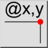
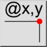
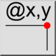
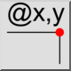

Relateret stilling
Værktøjslinje/ikon:
 

Menu: Info > Relateret stilling
Genvej: I, V
Kommandoer: infoposrel | iv
Dette er en automatisk oversættelse.
Værktøjslinje/ikon:
 

Menu: Info > Relateret stilling
Genvej: I, V
Kommandoer: infoposrel | iv
Dette værktøj udsender de relative kartesiske koordinater for udvalgte punkter i tegningen.